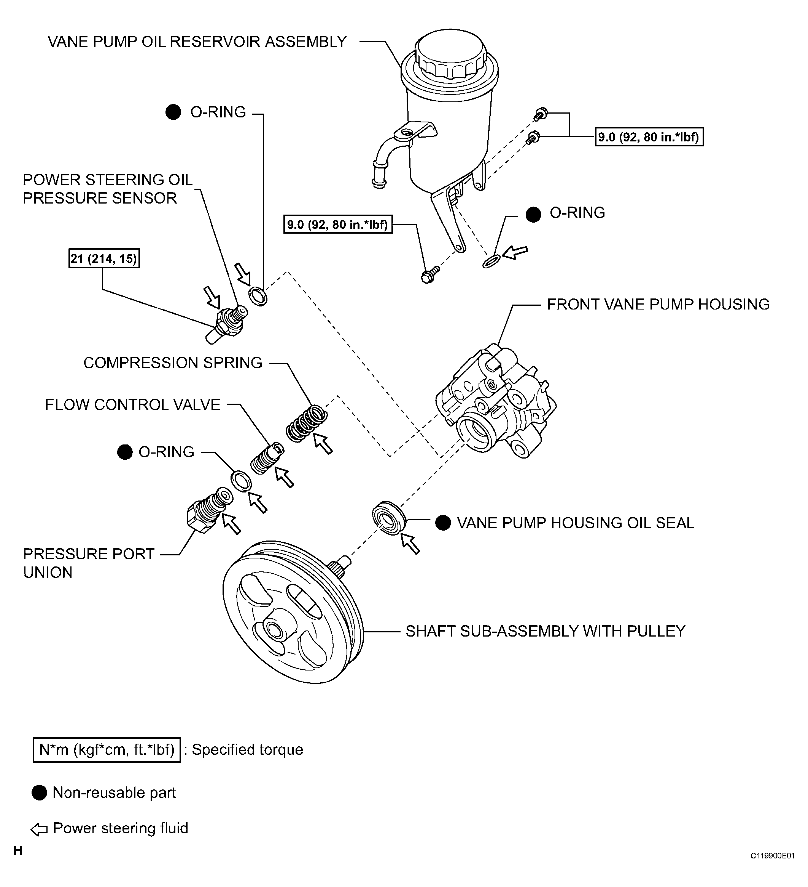
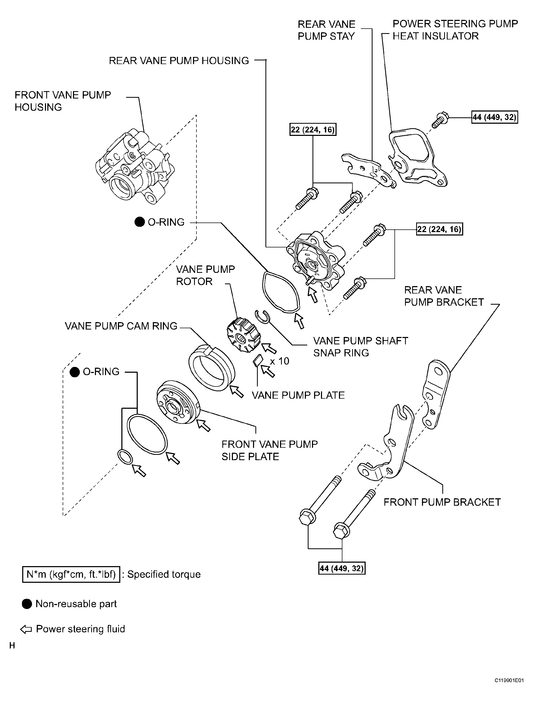

Vane Pump: Components
Fig 1: Identifying Vane Pump Components (1 Of 2)

Courtesy of © TOYOTA, LICENSE AGREEMENT TMS1002
Fig 2: Identifying Vane Pump Components (2 Of 2)

Courtesy of © TOYOTA, LICENSE AGREEMENT TMS1002